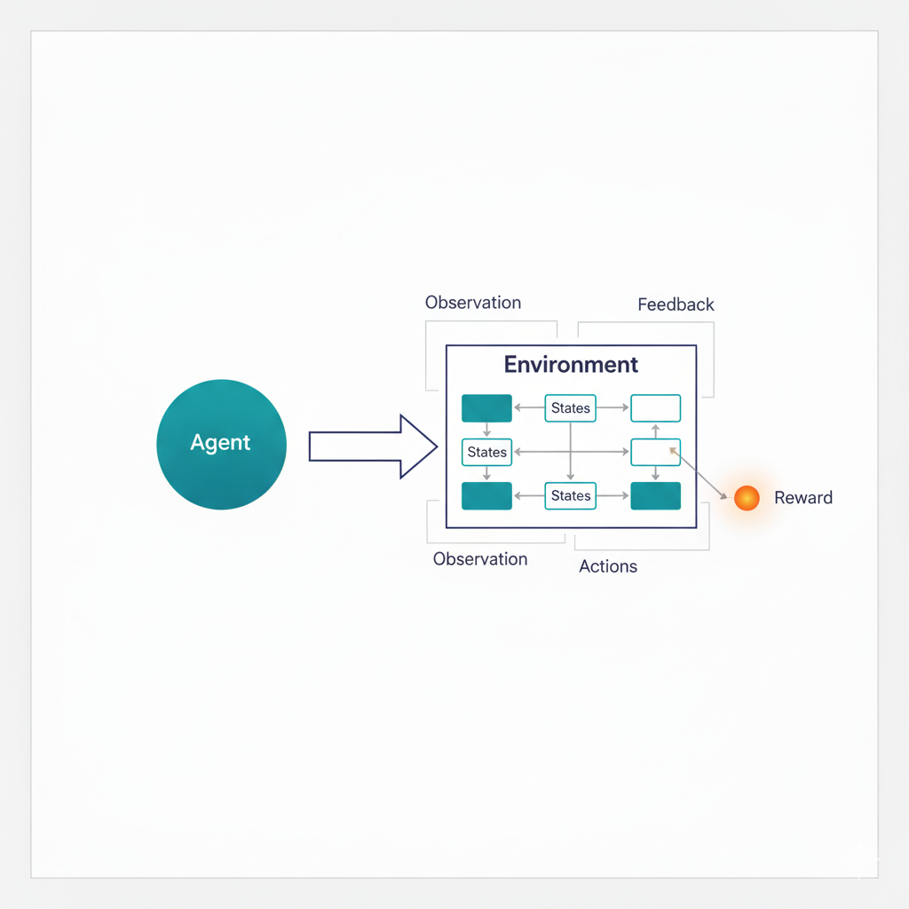
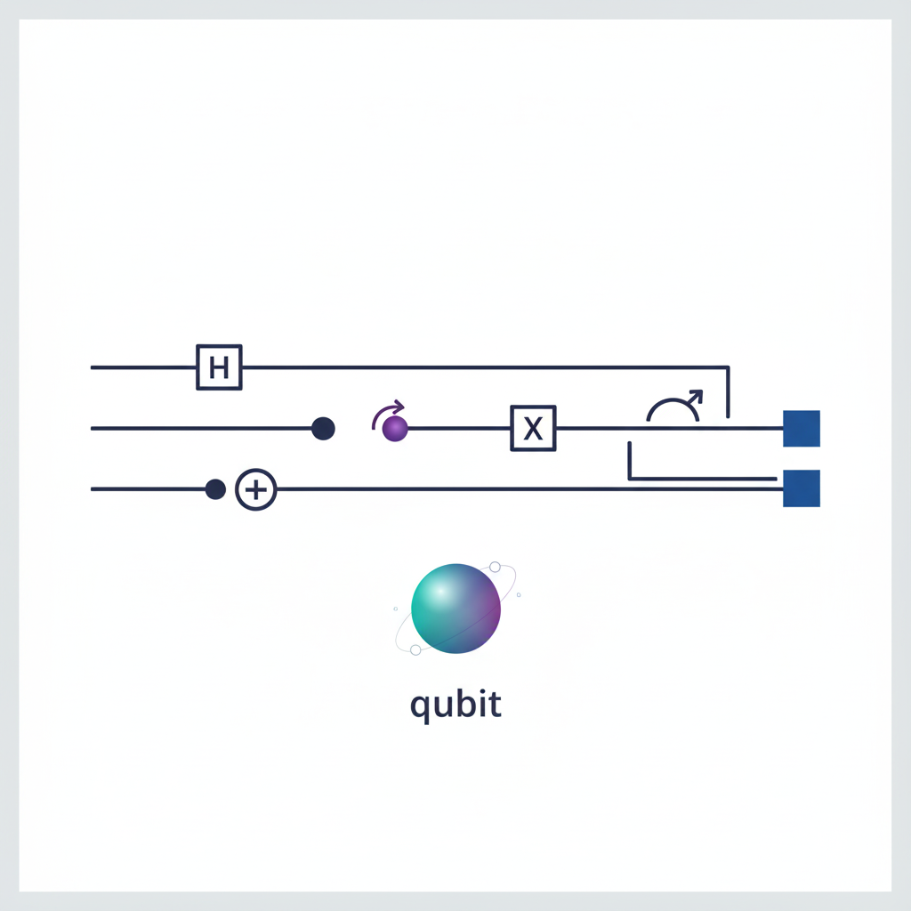

Research Interests
AI and Deep Learning

- Deep Learning and Neural Networks
- Foundation Models, Small/Large Language Models (LLMs), MLLMs, and Agentic AI
- Meta-Learning
- Physical-Inspired Computing and Physical AI
- Brain-inspired computing and neural architectures
- Cognitive Modeling and Computational Neuroscience
- Explainable artificial intelligence (XAI)
- Multi-Modal and Cross-Modal Learning
- Bioinformatics and pattern recognition
- Adaptive intelligent systems and decision support
Reinforcement Learning

- Deep Reinforcement Learning
- Imitation Learning and Apprenticeship Learning
- Planning under Uncertainty
- Multi-Agent Systems
- Game Theory and Theory of Mind
- Digital Twins, Autonomous vehicles, and self-driving cars
Quantum Computing

- Quantum Computing and Quantum Machine Learning
- Quantum Algorithms
- Quantum Simulation
- Quantum Hardware and Qubit Technologies
- Quantum Error Correction and Fault Tolerance
- Hybrid Quantum-Classical Algorithms
- Quantum Cryptography and Communication
- Emerging Technologies
Artificial Intelligence Research Lab
Our lab is building a collaborative environment that explores the theoretical, algorithmic, and cognitive foundations of autonomous learning. Prospective students and collaborators with interests in combining rigorous theory with creative system design are encouraged to reach out.
If you are driven by questions about how intelligence can understand and improve itself, and if you enjoy blending mathematical insight, algorithmic innovation, and imagination, you will find a natural home in this research effort.